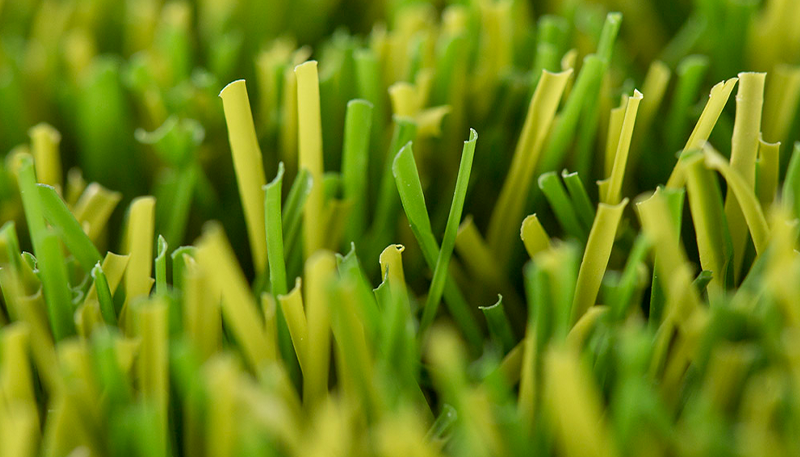

Trevi 40mm

Pasto sintético de alta densidad, ideal para jardines residenciales, terrazas y áreas de recreación.
Especificaciones técnicas
- Altura: 40 mm
- Uso recomendado: Residencial, áreas de tránsito moderado
- Tipo de fibra: Monofilamento
- Aplicaciones: Jardines, piscinas, terrazas, rooftops
Beneficios
- Aspecto natural y realista
- Alta durabilidad (resistencia UV)
- Drenaje eficiente (perforado)
- Mantenimiento mínimo
Proyectos donde se ha usado
Jardín Las Condes, Terraza Vitacura, Parque Bicentenario.